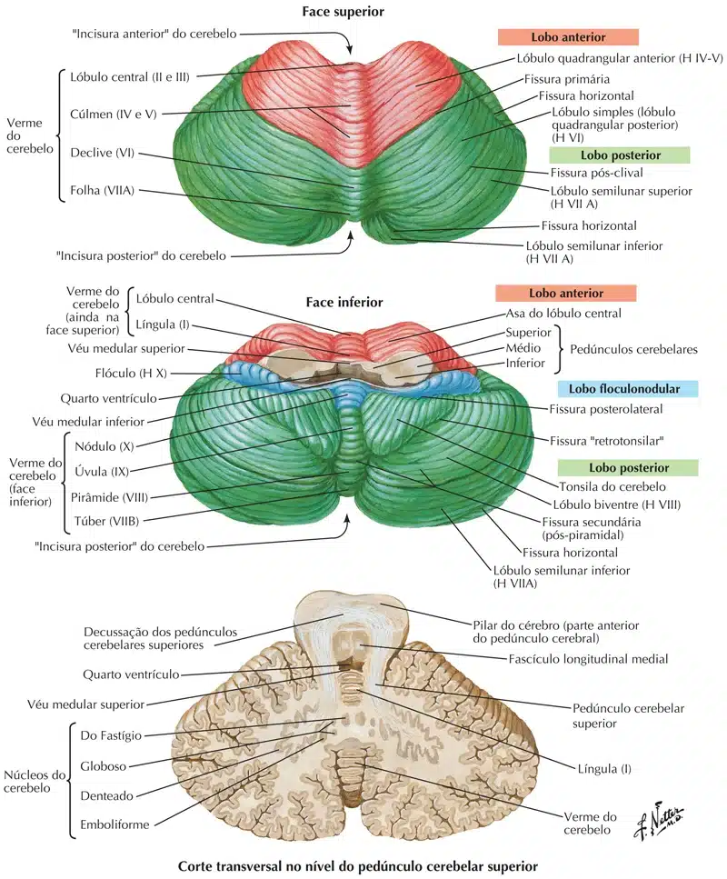
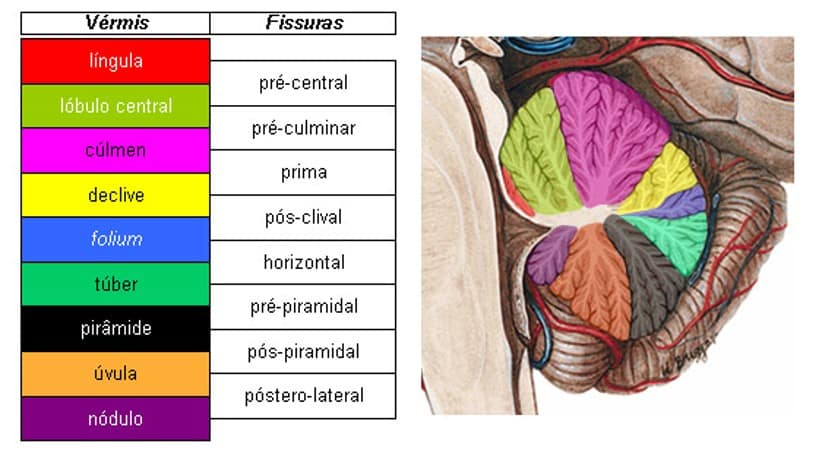

Está localizado na fossa cerebelar do osso occipital (fossa craniana posterior).
O cerebelo está separado do lobo occipital (localizado superiormente), por uma prega da dura-máter, denominada de tentório do cerebelo.
Anteriormente ao cerebelo localizamos a ponte e o bulbo.
O IVº ventrículo está localizado entre o tronco encefálico e o cerebelo.
Os pedúnculos cerebelares (superior, médio e inferior) conectam o cerebelo ao tronco encefálico.
O cerebelo apresenta uma camada cortical externa (córtex do cerebelo), homogênea, constituída por três camadas celulares.
Internamente, se distribuem a fibras mielínicas, compondo o centro medular branco do cerebelo.
No interior do centro medular branco do cerebelo são encontrados núcleos específicos (núcleos do cerebelo).
Anatomicamente o cerebelo é dividido em dois hemisférios cerebelares (direito e esquerdo), e uma porção mediana, denominada de verme cerebelar.
O cerebelo é dividido em lobos:
Flóculo-nodular (relacionado com o equilíbrio);
Anterior (funções relacionadas ao tônus muscular e propriocepção);
E posterior (coordenação dos movimentos).
Os lobos do cerebelo são divididos por fissuras, formando lóbulos.
Lobo flóculo-nodular: constituído por dois flóculos (cada flóculo está localizado abaixo do pedúnculo cerebelar inferior), unidos pelo nódulo.
Lobo anterior do cerebelo: forma parte da porção superior do cerebelo.
A fissura primária separa o lobo anterior do lobo posterior.
O lóbulo quadrangular anterior está localizado anteriormente a fissura primária.
Lobo posterior do cerebelo: o maior lobo do cerebelo apresenta uma porção superior, que se estende formando a porção inferior do cerebelo.

Os lóbulos e fissuras são (partindo da fissura primária):
Lóbulo quadrangular posterior;
fissura pós-clival;
lóbulo semilunar superior;
fissura horizontal;
lóbulo semilunar inferior;
fissura pré-piramidal;
lóbulo biventre.
A tonsila do cerebelo é uma porção dilatada, localizada no lobo posterior, em sua parte ântero-inferior (superiormente ao forame magno e posteriormente ao bulbo).
O verme do cerebelo apresenta sua divisão, com denominação diferente dos hemisférios cerebelares, sendo: língula, lóbulo central, cúlmen, declive, folha do verme, túber, pirâmide, úvula e nódulo.
Os núcleos do cerebelo são: denteado, emboliforme, globoso e fastigial.
O núcleo denteado é o maior deles, localizado lateralmente.
O núcleo fastigial assume uma posição medial.
Entre os núcleos denteado e fastigial estão localizados os núcleos emboliforme e globoso (denominados como núcleo interpósito).
Os núcleos do cerebelo exercem influencia no controle motor dos músculos estriados esqueléticos, o núcleo fastigial controla os músculos axiais e proximais dos membros (postura e equilíbrio), os núcleos interpósito e denteado controlam os músculos distais.
